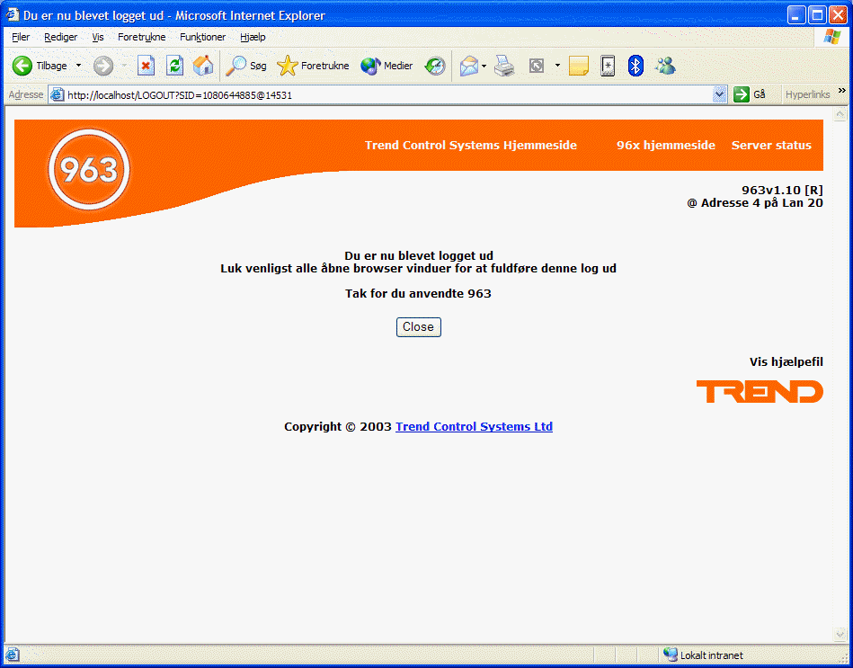

Efter endt brug af 963 bør man logge af for at forhindre, at der foretages uautoriserede ændringer.
Sådan logges der af:
1 Vis 963's start-side som beskrevet i kapitlet ‘Vis 963’s Start-Side’ i denne vejledning.
2 Klik på ‘Log af’. Du vil derefter logges af, og et display fremkommer som vist nedenfor.

3 Luk alle åbne Web-browservinduer.
Bemærk: Hvis 963 ikke bruges gennem et stykke tid, kan den aktive bruger automatisk blive logget af, hvis systemet er blevet konfigureret til at facilitere dette.